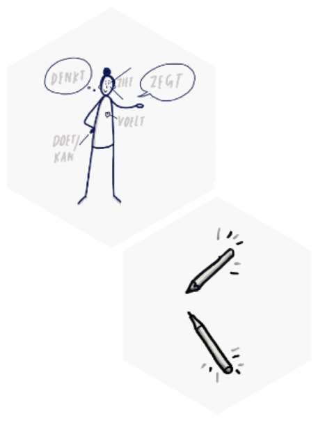

Het ontstaan van de tekenmethode Tekenen, spelen, delen
Tijdens mijn master ontwierp ik een methode met ‘verbinding’ als centraal thema. In eerste instantie wilde ik ouders en kinderen creatiever met elkaar laten communiceren, maar de methode bleek ook in andere contexten en met andere doelgroepen te werken. Ik heb onderzocht of de methode geschikt is voor het onderwijs, in dit geval het hbo, met studenten en docenten als doelgroep. Ik heb met een aantal groepen van verschillende opleidingen de methode gespeeld en diverse thema’s uitgeprobeerd.Nut
Connection is we’re here. We are hardwired to connect with others, it’s what gives purpose and meaning to our lives. B. BROWN, DARLING GREATLY: HOW THE COURAGE TO BE VULNERABLE DARING TRANSFORMS THE WAY WE LIVE, LOVE, PARENT AND LEAD.Wanneer bewerkstelling je ‘verbindingen’? Dat is mogelijk aan te tonen en bovendien is het geen concreet eindresultaat. Met name dat laatste is iets waar ik tegenaan liep in het hbo. Waar het ‘streven naar verbinding’ in een therapeutische context en bij vrienden groepen gezien werd als iets waardevols. Zo was er een student die zei ‘ik vond het een compleet nutteloos spel. Ik heb wel de rest van mijn groepje beter leren kennen.’ Ervaart de student het leren kennen van zijn teamgenoten niet als nuttig? Moet het onderwijs altijd nuttig zijn en resultaten meetbaar? En betekent dit dat de methode niet binnen het hbo onderwijs?
In dit artikel beschrijf ik wat ik hierover ontdekt heb en waarom ik ervan overtuigd ben dat de methode wel degelijk binnen het hbo past. Juist tijdens de coronacrisis was te merken hoe groot de behoefte van de mens is om zich met anderen te verbinden. De methode is inmiddels ook digitaal te gebruiken waardoor mensen ook op afstand samen kunnen tekenen, spelen en delen.

Drie fases
Ik ontdekte dat mijn methode uit drie opeenvolgende fases bestaat, die los van elkaar ook interessant zijn om verder te onderzoeken en te gebruiken voor andere onderdelen en met andere doelen in het onderwijs. Tekenen helpt mensen om specifieker over bepaalde onderwerpen na te denken en het kan ook gesprekken op gang brengen. De spelelementen en setting zorgen ervoor dat de drempel om te tekenen niet zo groot is en dat het schetsen voelt als een gemeenschappelijke bezigheid. Dat was het geval bij mensen in een therapeutische setting, bij families en vriendengroepen. Het was niet anders bij de studenten in het hbo. Door de methode zo vaak met eenzelfde doelgroep te testen is me wel duidelijker geworden hoe de verschillende onderdelen zich tot elkaar verhouden.De methode bestaat uit drie opeenvolgende fases.
Al deze fases raken aan verschillende vakgebieden. Het doel van mijn methode is dat mensen op hun eigen gedachten en overtuigingen reflecteren en hun overdenkingen vervolgens delen met de rest van de groep.